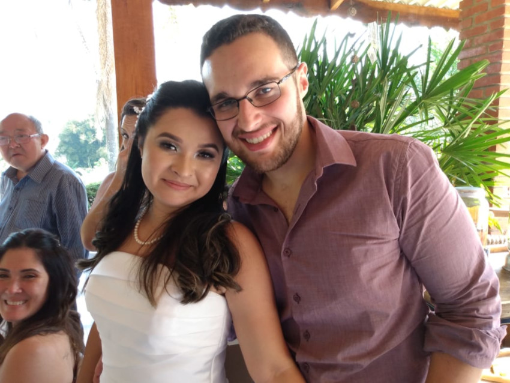

Olá!
Meu nome é Natani Harumi , sou Gerontóloga de formação, gateira por vocação e estudante solo de tecnologia. 🤓
Nasci no dia 29 de Novembro de 1993 , sendo este dia uma segunda-feira, não me impressiona eu realmente gostar das segundas, rs. Sagitariana ♐ com ascendente em peixes ♓, tenho como uma forte inclinação a liberdade e um grande pavor de sentir que uma situação ou alguém me controle.
Nasci, cresci e vivo na Zona Leste de São Paulo e só pretendo sair se for para uma casinha no interior, gosto muito do meu bairro, pois fica bem próximo a minha familia de sangue e a familia que ganhei quando tive a sorte de encontrar o meu esposo!
Conheci o Gabriel em maio de 2016, em uma festa da Universidade São Judas Tadeu. Paguei minha lingua, pois sempre achei impossível um romance de "balada" ser próspero e duradouro, mas estamos por aqui provando que o amor não tem hora e nem lugar para acontecer. Namoramos durante três anos e nos casamos no dia 14 de setembro de 2019, em uma tarde ensolarada em um sítio em Mairiporã, e posso dizer que foi um dos dias mais felizes que vivi até hoje.
Após o casamento me redescobri uma pessoa muito diferente do que eu era, eu AMO uma festinha em casa, que acabe só depois das duas da manhã e que seja regada de muita comida boa, amigos e familia para compartilhar.
Curiosidades
Gosto de segundas, acho que todo início (não apenas as segundas, mas qualquer início; de ano, de emprego, de relacionamento) dão uma pequena ponta de esperança ao iniciado, e ele sente que "dessa vez será diferente". Também gosto muito de assitir a filmes e seriados, em especial documentários sobre qualquer assunto; gosto também de escutar podcasts jornalíticos e, particularmente, não sou a maior fã música.
Já fui uma grande apreciadora de artes e poemas, sempre indo a exposições e museus. Meu artista prefererido é o pintor, escultor, poeta, anatomista e arquiteto italiano, Michelangelo. A obra que mais admiro é o afresco "Criação de Adão", pintado por volta de 1511, e que se encontra localizado no teto da Capela Sistina (Vaticano); sonho um dia poder ir a Itália ver essa e outras obras de perto.
Para poemas, o meu poeta preferido é o brasileiro Carlos Drummond de Andrade, e um de seus poemas que mais gosto é o "Poema de Sete Faces":
Poema de Sete Faces
Quando nasci, um anjo torto
desses que vivem na sombra
disse: Vai, Carlos! ser gauche na vida.
As casas espiam os homens
que correm atrás de mulheres.
A tarde talvez fosse azul,
não houvesse tantos desejos.
O bonde passa cheio de pernas:
pernas brancas pretas amarelas.
Para que tanta perna, meu Deus,
pergunta meu coração.
Porém meus olhos
não perguntam nada.
O homem atrás do bigode
é sério, simples e forte.
Quase não conversa.
Tem poucos, raros amigos
o homem atrás dos óculos e do bigode.
Meu Deus, por que me abandonaste
se sabias que eu não era Deus
se sabias que eu era fraco.
Mundo mundo vasto mundo,
se eu me chamasse Raimundo
seria uma rima, não seria uma solução.
Mundo mundo vasto mundo,
mais vasto é meu coração.
Eu não devia te dizer
mas essa lua
mas esse conhaque
botam a gente comovido como o diabo.